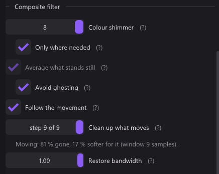

src/render/shaders.h, pass 1 (kCleanPS)


A composite signal carries colour and brightness on one wire, and the two leak into each other. That crosstalk shows up as two different artefacts, and they need two different treatments because they live in two different places. The wire adds two more defects that are not crosstalk at all:
| Artefact | What it is | Where it lives | Control |
|---|---|---|---|
| Rainbow shimmer | dense brightness detail the decoder mistook for colour | the chroma | Colour shimmer, Only where needed |
| Dot crawl | the colour subcarrier leaking into brightness | the luma | Average what stands still, Dot crawl |
| Noise | everything an analogue chain picks up | both | Follow the movement |
| Rolled-off top end | the band the encoder and decoder taper towards the subcarrier | the luma | Restore bandwidth |
Blurring the chroma removes the first and does nothing at all for the second.
Three of these four controls appear only when the Source tab says the cable is composite. Rainbow shimmer, dot crawl and the rolled-off top end are all consequences of the one shared wire; S-Video and component do not have it, so on those inputs the three are hidden and their stored values cleared rather than offered as a trade of sharpness for nothing. Noise is the exception — every analogue chain picks it up — so the average and Follow the movement stay wherever the source is analogue, under the heading Noise and with the carrier half of their explanation dropped. Which cable is in use cannot be read off most cards and is therefore asked; see Source and signal.
Why this pass runs first
Everything on this page happens before any deinterlacer has touched the picture. That is the entire reason pass 1 exists as a separate pass.
A cleanup that runs afterwards has to work out which source line the pixel in
front of it came from, and for a mode that interpolates there is no single
answer. It ends up subtracting a pattern that pixel never carried, which is not
a cleanup but a new artefact. Doing it first removes the question — and it is
also why TemporalDelta() and DotDemodDelta() are written as deltas
computed on the woven pixels, kept apart from the decision of where to apply
them.
This was found the hard way: the filter worked with deinterlacing off and fell apart with it on.
Rainbow shimmer: SoftenChroma()
Composite carries colour at roughly a quarter of the bandwidth it carries brightness, so a picture decoded from it has no fine colour detail in it to begin with. Averaging the colour sideways therefore costs nothing real, and it takes the shimmer with it.

The grey ring, and what it was not
Reported symptom: with colour shimmer turned up, anything gold on a blue background — the stopwatch on Mario Kart's mode select — gained a grey fringe.
The first diagnosis was wrong and is worth recording, because the wrong answer is the tempting one. The old code read:
float3 soft = sum / n; // box average in RGB
return soft + (Luma(rgb) - Luma(soft)); // brightness put backThat looks like it mishandles luma, and the obvious correction is "convert to
YCbCr, average only Cb and Cr, recombine with the original Y". Checked against a
real captured frame, the two agree to 0.000000 levels: adding
Luma(rgb) − Luma(soft) to all three channels is algebraically identical to
averaging chroma and keeping the centre's luma. Luma of a chroma vector is zero
by construction, so the scalar add lands exactly where the matrix round-trip
would.
The real cause is simpler and harder: gold and blue are close to complementary, so the mean of their chroma genuinely is grey. No unweighted average across that edge can return anything else. The fix had to change which neighbours are averaged, not what is averaged.
Weighted by colour distance
const float centreLuma = Luma(rgb);
const float3 centreChroma = rgb - centreLuma;
for (int dx = -gChromaSoft; dx <= gChromaSoft; ++dx) {
float3 s = FetchRgbAt(int2(x + dx, row));
float3 sc = s - Luma(s);
float3 d = sc - centreChroma;
float w = exp(-dot(d, d) * kChromaKeepEdge);
sum += sc * w;
n += w;
}
return centreLuma + sum / max(n, 1e-4);In a flat area every weight is near one and this is the box average it always was. Across a colour edge the far side falls away and the colour survives.
Measured against the gold-on-blue edge from the capture above:
kChromaKeepEdge | Saturation lost at the edge | Smoothing inside a flat area |
|---|---|---|
| 0 (the old box average) | 0.42 | 2.05 |
| 4 | 0.19 | 2.05 |
| 8 (chosen) | 0.09 | 2.05 |
| 20 | 0.05 | 2.05 |
The second column not moving is the point: the weighting costs nothing on the half of the job that matters, because inside a flat area there is no colour distance to discount. Unfiltered, that same area measures 2.54.
Eight rather than twenty because the returns past it are small and the risk is not — a gentle chroma gradient, a sky or a fade, is made of exactly the small differences a high weight would start discarding.
The loop is deliberately not unrolled. Every FetchRgbAt expands into a
pixel-format branch and a four-way choice of which frame to read, so seventeen
unrolled copies cost the shader compiler seconds — which the user waits through
at every start. A real loop over the actual radius costs nothing at runtime and
compiles in a fraction of the time.
Colour edges: RestoreChroma()
Since 5.7.0, on every analogue source, always on. The colour is not only soft, it is soft in a way that can be measured: fitted to edges from the card, one colour sample every second pixel, each a Gaussian of 1.6 samples. That is about two SNES pixels of colour resolution, which is why a one pixel black outline round cyan letters used to come out blue.
Undoing a blur outright multiplies noise, so this asks a better posed question: which colour, sampled the way the card samples, gives back what the card delivered, while staying smooth wherever the brightness is smooth? Brightness came through at full bandwidth, so it says where the edges really are.
minimise |A c - o|^2 + 3 * sum w_j (c_j+1 - c_j)^2 + 0.01 * |c - captured|^2
w_j = exp(-(dY_j / 30)^2)Over 13 pixels, keeping the middle; a tridiagonal chain plus a 5 by 5 system (Woodbury), so it costs no latency. The colour shimmer softening runs in the same window, after the rebuild, and compares brightness as well as colour so it does not average the rebuilt outline away again.
Not the colour edge alignment taken out in 5.6.0: that moved the colour sideways by a measured delay, this gives back bandwidth.
Dot crawl: two controls
The Picture tab has a checkbox and a slider, and they hand over to each other.
They are two different bargains, which is why they are two controls:
- Averaging costs nothing and only helps where the picture is standing still.
- Demodulation is the only thing that helps where something is moving, and it costs sharpness.
Behind the single slider they used to share, the first was switched on by the very first step above zero and the whole rest of the travel was the second getting gradually softer — which was exactly what it felt like to use, and left no way to have the free half on its own.
The averaging locks on whenever demodulation is asked for (the checkbox ticks itself and greys out when the slider leaves zero). Without it the demodulator works over the still parts of the picture as well, paying sharpness there for something that is free.
The temporal half: averaging one crawl cycle
float3 TemporalDelta(int x, int row) {
float3 f0 = FetchRgbFrame(int2(x, row), 0);
float3 sum = f0 + FetchRgbFrame(int2(x, row), 1);
if (gCrawlCycle >= 3) sum += FetchRgbFrame(int2(x, row), 2);
if (gCrawlCycle >= 4) sum += FetchRgbFrame(int2(x, row), 3);
return sum / (float)gCrawlCycle - f0;
}The checkbox is called Average what stands still.
Extended history
A second checkbox above it, off by default, composite only. It keeps twelve decoded frames and fits the crawl against windows of five to twelve of them, plus a spatial fallback. Each fit carries its own error estimate; the frame gets the crawl of the fits that hold, weighted by that error, taken out before the averaging above reads it. So the crawl also goes where something moves or fades: around text, in transparencies.
- Runs only where the crawl cycle was measured as 2 or 4 frames: PAL, PAL 60, PAL M, PAL N, NTSC. Anywhere else it stays off by itself.
- No frame of delay; the cost is GPU time, three passes over the source.
- The shaders are generated by
tools/crawl_remover/gen_qb.pyfrom the prototype;src/render/shaders_remover.his not edited by hand.
Since 5.4.0 the averaging gate also checks that a change repeats one crawl cycle later, capped by the local luma range, and the history is seven frames deep for it.
Since 5.4.1 both the gate and Extended history let go of a faint texture that moves, such as a road running towards the camera. Its sums barely change, so it passed for still and was averaged into streaks. The check: luma over three samples, this frame against one crawl cycle back, 7 × 3 spots of the same field. Where the spread exceeds 0.75 levels and the picture itself is faint, the gate lets go and Extended history falls back to its spatial estimate. Standing pictures keep their correction; the cost is GPU time only.
Since 5.5.0 the gate asks the same of sharp detail. The gaps between the letters of a pulsing menu caption are narrower than the seven-sample sums and slide inside them as the text grows, so the average filled them. The fade is fitted out first (brightness and contrast of the picture itself), and the allowance grows with the contrast, so standing edges keep their correction: 98 to 100 % on menus and title screens. Since 5.5.1 Extended history asks the same of its own history, over the same spots, and falls back to its spatial estimate there.
Why the cycle and not a fixed number
The number came off the card, not out of a textbook. Measured on a PAL-60 console, the mean frame-to-frame difference of a still picture:
| Lag | 1 frame | 2 frames | 3 frames | 4 frames |
|---|---|---|---|---|
| Mean difference | 1.91 | 2.62 | 1.90 | 0.78 |
That is a clean four-frame cycle. Averaging two frames cancels little, because it picks two points of that cycle. Averaging four covers it exactly, and what is left is the picture.
This half costs no sharpness at all. Analogue noise, being uncorrelated between frames, goes the same way for free.
Up to 5.1 the filter averaged four frames for every source. That covers PAL (270° per frame), PAL-M (90°) and textbook NTSC (180°, back after two). It does not cover a console that picks its own clock and lands on a cycle of three:
| Cycle of the source | Left over 2 frames | over 3 | over 4 |
|---|---|---|---|
| 2 | 0.00 | 0.33 | 0.00 |
| 3 | 0.50 | 0.00 | 0.25 |
| 4 | 0.71 | 0.33 | 0.00 |
Since 5.2 the renderer measures the cycle of whatever is plugged in, and the shader averages over exactly that. Until a cycle is measured, it averages four.
Measuring the cycle
VideoRenderer::SampleCrawl, AnalyzeCrawl, JudgeCrawl.
Sites. A grid of 40 × 32 sites inside the picture. At each one the luma row is folded against cosine and sine of the carrier over a Hann window of about two carrier periods. The result is a phasor: its length says how much carrier is there, its angle in which phase.
Distances. The phasors of the last thirteen frames are kept. The measure is the squared distance of the current phasor from the one 1, 2, 3 and 4 frames back. It uses distances, not angles: in PAL, U and V rotate against each other and a site holds a mix of both, but both move by the same amount.
Profiles. Each cycle has its own shape over lags 1 to 4:
- two is (1, 0, 1, 0);
- three is (1, 1, 0, 1);
- four is (.5, 1, .5, 0).
Noise adds the same floor to all four lags. The PAL measurement above fits the third profile at 0.001.
Only still sites count.
- The window mean may move by at most 5 levels over five frames.
- A fine pattern that scrolls turns the phasor just like the crawl does. A picture scrolling 2 px per frame looked like a cycle of three. Two, three and four all divide twelve, so after twelve frames the crawl is back exactly where it was. A site whose phasor is elsewhere after twelve frames has moved, and is dropped. The lag-12 distance also goes into the fit.
Verdict. A window is 100 frames, about two seconds. It needs 4000 still samples, a spread of 1.3 between the largest and smallest distance, and a fit error below 0.1. Whole-picture scrolls that happened to look like a cycle fitted at 0.07 to 0.24.
Adoption. A cycle is taken over when two windows with a verdict agree in a row. A window without a verdict does not count against it: a picture that was all moving says nothing about the carrier.
Log. Each measured cycle is logged, for example:
Crawl cycle measured: 4 frames (differences 3.56 4.90 3.57 0.84 0.71 at 1..4 and 12 frames apart, fit 0.001, …)
The work is split around the present, like every analysis in the renderer. The sample copies about 22 KB while the frame is still in the cache, which takes about 5 µs. The fit runs after the present, so it shows up neither in the picture's delay nor in the frame age.
A cycle of four frames spans 160 ms at 50 Hz and 133 ms at 60 Hz. At two or three frames, the "nothing is moving here" judgement has less to hold.
The gate: telling shimmer from movement
TemporalGate() decides how much of the correction to trust at each pixel.
This is the part that took two attempts. Dot crawl crawls: it is not still, so any detector that simply asks "did this pixel change" calls it movement and switches the filter off exactly where the artefact is. Measured that way, the filter took 48 % off the mild half of the picture and 15 % off the worst one per cent — the wrong way round, and therefore invisible.
What separates them is not amount but scale. The shimmer is a fine pattern a few pixels across; a picture that is really moving moves in broad shapes.
for (int dx = -3; dx <= 3; ++dx) { s0 += LumaFrameAt(…, 0); … } // seven samples
float mhi = max(max(s0, s1), max(s2, s3)) * 0.142857;
float mlo = min(min(s0, s1), min(s2, s3)) * 0.142857;
return 1.0 - saturate((mhi - mlo - gMotionSlack) * gMotionSlope);Seven horizontal samples is a little over two cycles of the colour subcarrier, so the shimmer averages itself away before it is ever asked about, and real movement comes through untouched. Then a slack, and a flank.
Avoid ghosting
Where the gate lets go is the whole trade, so it is a checkbox — Avoid ghosting, next to the averaging that it governs.
The filter can only average, and averaging across movement is smearing. That cannot be computed away, only moved, which is why this is a setting rather than a better default.
| Slack | Fully closed at | What you get | |
|---|---|---|---|
| off — crawl first | 5 levels | 26 levels | slow, low-contrast movement is averaged with three older copies of itself: a trail |
| on — ghosting first | 5 levels | 9 levels | moving edges stay clean; slow areas keep some crawl, where the demodulator picks the work back up |
The slack does not move, deliberately. Five levels out of 255 is not a sensitivity setting — it is the card's noise floor. Setting it to zero was tried and is wrong: it makes the filter switch on and off on a still picture, which gains nothing and looks worse than either operating point.
Only the flank moves. Between 9 and 26 levels lies exactly the band of slow, low-contrast movement where the trail becomes visible.
The spatial half: synchronous demodulation
DotDemodDelta(). This is the slider.
Why a notch filter is not enough
Dot crawl is the subcarrier amplitude modulated by however much colour is at that point in the picture — which is why it only appears at colour edges. Measured on this card, isolating the pattern through its own four-frame cycle and looking at its spectrum, a band of thirty-two bins around the peak holds under half its energy. The modulation smears it far too wide for any narrow filter to catch, and a wide one takes the picture with it.
What it does instead
Synchronous detection does not care about the smearing. Multiplying the line by the carrier and by the same carrier a quarter cycle over moves the pattern down to zero frequency, where a short average recovers exactly how much of it is there; multiplying back up reconstructs it, and it is subtracted.
float w = kTwoPi / gCarrierPeriod;
…
acc += hann * l * cos(w * (x + k)); // in phase
accQ += hann * l * sin(w * (x + k)); // quadrature
…
float pattern = 2.0 * (acc * cos(ph0) + accQ * sin(ph0)) / norm;
return -pattern; // subtracted from all three channelsPicture detail is not tied to the carrier's phase and survives, apart from whatever happened to sit right on the frequency. Subtracting the same amount from all three channels moves brightness and leaves colour alone, which is the half of the picture this belongs to.
Against this card's own frames, at a window of nine samples this removes 81 % of the pattern for 17 % of the horizontal sharpness, where the three-tap notch it replaced managed 67 % for 18 %.
The mean pass is not optional
There are two passes over the window. The first exists only to find the local average:
float mean = 0.0, norm = 0.0;
for (…) { mean += hann * Luma(FetchRgbAt(…)); norm += hann; }
mean /= norm;The carrier does not sum to zero over a window of a few samples, so a flat area of picture correlates with it and gets a pattern invented on top of itself. Measured on a constant field of 128, leaving this out produced swings of ninety levels. That was the "picture goes oddly bright" bug.
A raised cosine (Hann) weighting is applied over the window in both passes, so the ends do not ring.
The slider is the window width
float cycles = 8.2 - gDotNotch * 5.9; // a little over eight, down to just over two
int r = (int)floor(cycles * gCarrierPeriod * 0.5 + 0.5);
r = clamp(r, 2, 12);| Window (samples) | 25 | 15 | 11 | 9 | 7 | 5 |
|---|---|---|---|---|---|---|
| Pattern removed | 42 % | 61 % | 74 % | 81 % | 90 % | 99 % |
| Horizontal sharpness | −7 % | −11 % | −14 % | −17 % | −25 % | −39 % |
In practice a value of 0.1 on the slider is already enough for most material.
The slider snaps to its steps
The window is an integer count of samples, clamped to 2–12, so a continuous
slider has a great many positions that compute the same window and change
nothing. BuildDotCrawlSteps() walks the slider's range, collects the distinct
windows it produces, and the control snaps to those — nine steps on PAL, plus
off.
A slider that moves without changing anything is claiming something untrue. The
label reads step 4 of 9 rather than a number with no meaning, and the line
underneath says what that step costs.
Counted in cycles, not in pixels
The window is measured in cycles of the carrier, and that matters because the two are not the same thing across standards: NTSC's carrier occupies 3.77 samples of a 720 pixel line where PAL's occupies 3.04. A window fixed at a pixel count therefore hands NTSC a fifth fewer cycles to detect with.
Simulated against an amplitude modulated pattern — which is what dot crawl actually is — that cost NTSC 61 % removal at the far end of the slider where PAL got 69 %, and it invented a quarter more pattern of its own doing it. Counted in cycles the two land at 67 % and 72 %.
The same scaling covers capture widths other than 720, which is why
gCarrierPeriod arrives already multiplied by srcW / 720
(VideoRenderer::effectiveCarrierPeriod()).
The standard has to be right
gCarrierPeriod comes from VideoStandardSubcarrierSamples() — see
Source and signal. Nothing is detected from the picture.
With the carrier assumed wrong — PAL's filter against an NTSC signal or the reverse — removal falls from about 70 % to 34 % at the middle of the slider. That is the reason to care about the Source tab beyond getting a picture at all.
Why it stays one-dimensional
DotDemodDelta() reads along the line and never off it. The obvious next step is
a vertical comb, and the arithmetic for one is inviting. PAL's subcarrier fits
281.78 cycles into a line of 858 samples, so the fractional part turns the
pattern −78.8° from one line to the next and −157.6° across a field line
pair, while real picture detail at the same frequency does not turn at all.
Taps of (−e^−iθ, 2, −e^+iθ)/4 on the demodulated phasor answer a component
turning ψ per step with (1 − cos(ψ + θ))/2, so θ = 0 rejects the picture
and keeps the crawl — 96 % of it across a field line pair, none of the detail.
That is the case on paper. It does not survive being measured.
Isolating the artefact. Every attempt to compare the two filters inside a single frame failed, and the reason is physical: within one frame crawl and real detail are both narrowband structure sitting on edges, so no region of the picture is a valid control for any other. The time axis separates them cleanly where space cannot. Twenty-six frames of a parked kart, every composite control off and the deinterlacer on weave: the mean over the stack is the picture with the crawl averaged out of it, and each frame minus that mean is the crawl with the picture subtracted out of it. No control group is needed — the scene subtracts itself.
What comes out is the subcarrier and nothing else. It walks +107° per frame
against the predicted +90°, its horizontal spectrum peaks at 0.312–0.344
cycles/sample against the carrier's 0.328, and it sits where the colour is:
0.90 levels rms on grey, which is the sensor noise floor, against 2.95 on
coloured pixels and 5.96 on the fifth of them where it is strongest.
Because both estimators are linear, est(picture + crawl) = est(picture) + est(crawl) exactly, so each can be run on the two separately: what it produces
on the crawl-free mean is damage by definition, what it takes off the isolated
crawl is benefit by definition.
The vertical structure is already gone. The crawl's line-to-line coherence
is only 0.44 at row ± 1 and 0.175 at row ± 2 — the support theory
preferred is the one where the pattern has almost no coherent phase left to
comb. The picture's carrier band, by contrast, holds 0.785 at +3.4°: detail
really does refuse to turn, exactly as assumed. The separation the comb needs
exists; the crawl has simply been scrambled out of reach of it, presumably by
the card's own comb filter, which leaves the temporal walk intact and the
vertical relationship not.
Damage in levels rms on the crawl-free picture, all four estimators scaled to remove the same 20 % of the isolated crawl:
| estimator | most it can take | damage at 20 % taken | fields 1 px out | 2 px |
|---|---|---|---|---|
| horizontal only, as shipped | 48.1 % | 0.558 | 0.556 | 0.555 |
vertical comb, same field, row ± 2 | 30.3 % | 0.536 | 0.540 | 0.537 |
vertical comb, other field, row ± 1 | 33.4 % | 0.372 | 0.760 | 0.834 |
| five tap, both supports | 39.4 % | 0.389 | 0.541 | 0.569 |
The whole benefit sits on one tap, and it is the tap that cannot be paid for.
The same-field comb comes out at 0.536 against the shipped filter's 0.558 —
a 4 % difference, and it gives up a third of the removal ceiling to get it. Only
row ± 1 is genuinely better, by a third. But this pass runs in source geometry,
before the deinterlacer, so row ± 1 is the other
field, a fiftieth of a second away. Every figure above was measured on a parked
kart, where that costs nothing. Put the two fields out of step the way motion
does — shift the odd lines of the crawl-free picture and re-measure, which leaves
the same-field and horizontal filters untouched by construction — and the
cross-field comb goes from the best of the four to worse than the filter it was
meant to replace, 0.760 at one pixel and 0.834 at two.
Which closes it, because of where the demodulator sits in the pipeline. On
content that stands still the average over one crawl cycle
has the crawl already and reports as much through handled; the demodulator only
matters on content that moves. The vertical comb helps only where it is not
needed and inverts exactly where it is. The five-tap compromise lands back on
the shipped filter's number under motion, which is the same statement with the
arithmetic averaged out.
Four controls that had to be thrown away
Recorded because each was convincing before it broke, and the same traps are waiting for anyone who tries this again on a single frame.
Static HUD against moving scenery. Meant to compare filtered and unfiltered content in one picture. HUD text is synthetic-sharp, so it carries more carrier band energy than scenery whatever any filter does to it — it measures content sharpness, not filter effectiveness.
Colour regions against the grey road. The road has no chroma and therefore no crawl, so the energy the filter removes from colour and does not remove from road looked like a clean benefit figure. Scanning the assumed carrier period from 2.75 to 3.35 samples gave a monotonic 4.12 down to 3.77 with no peak at the real 3.045 — a carrier-specific measurement must peak at the carrier. It was measuring that grass has more texture than tarmac.
Spectral shape, colour tiles over road tiles. Normalising each spectrum by its own total was supposed to remove that. But the road holds 0.03 % of its energy at fx = 0.344 against 1.22 % at 0.156, so dividing by it inflates every ratio in the top half of the band to somewhere between 3 and 19, uniformly and meaninglessly.
The line-to-line angle. The last one standing, and the best of them: an angle does not care how much energy there is, and grey came out near 0° against colour at +90°, stable across every region of the picture. It reproduces at a deliberately wrong carrier period of 2.40 — grey +8.0°, colour +109.4°. Both figures are the same fixed 0.75 sample per line in pixel terms, which is the diagonal of the kerb and the treeline, not the subcarrier.
A fifth trap belongs with them, in the method that finally worked. The movement mask that decides which pixels are static must be built on the residual blurred with its sign, not on the blurred absolute value: dense crawl raises a blurred magnitude enough to be read as movement, so the mask throws out precisely the coloured edges the crawl lives on. That version reported the crawl at 0.937 levels rms with a featureless spectrum, which is the noise floor of the quiet regions that survived it.
The two halves have to be told about each other
float handled = 0.0;
if (gTemporal > 0.0 && gHistCount >= 3) {
handled = TemporalGate(p.x, p.y) * gTemporal;
rgb += TemporalDelta(p.x, p.y) * handled;
}
if (gDotNotch > 0.0) rgb += DotDemodDelta(p.x, p.y, handled);Both work out how much pattern is present from the captured pixels. Where the average has already taken it away, the demodulator would go and subtract it a second time — putting an inverted copy back. That is why turning both up used to make the picture worse than either one alone.
So the temporal half reports how much of the job it did, and the demodulator handles only the rest:
- Still picture — the average does it all, at no cost in sharpness.
- Moving picture — the average steps back and the demodulator takes over.
Since 5.7.0 the demodulator does not scale its result by (1 - handled)
any more. It measures the line as the average left it (CleanTapAt()) and
takes out whatever crawl is still there. Where the crawl cycles, a still
picture comes out of the average clean and the demodulator finds nothing. Where
it does not -- a PAL SNES lands on the same carrier phase every frame -- the
average keeps all of it, and scaling by the gate left exactly those pictures
with their full crawl.
(1 - handled) is then the share of the picture that is moving, and everything
added in 3.3 is scaled by it or gated on it. The three filters below are
complements of the two above by construction, not by tuning.
Follow the movement: MotionCompDelta()
The average only runs where the picture stands still, so in a running game most of the screen gets no temporal filtering at all and keeps every bit of the noise the analogue chain put on it. Averaging along the movement instead of across it fixes that.
What it cannot do, and why that is a result
It cannot remove dot crawl. This is worth writing out because it looks like it should, and because "motion-compensated dot crawl removal" is the obvious thing to try next.
The crawl is fixed to the raster, not to the picture. At sample x it
carries phase w*x + phi_f, where phi_f walks the four-frame sequence, and the
four terms sum to zero — that is the whole mechanism the co-located average runs
on. Fetch frame f from x - d_f instead and the phase becomes
w*x - w*d_f + phi_f, so the sum turns into
sum over f of exp(i * (phi_f - w * d_f))With a constant velocity d_f = f*v that is a geometric series with ratio
exp(i * (pi/2 - w*v)). Four terms of a geometric series vanish only when the
ratio is a fourth root of unity other than one, which here means v must be a
multiple of a quarter of the carrier period: about 0.76 samples per frame on
PAL, 0.94 on NTSC. At every other speed motion compensation destroys the
cancellation the average exists for, and at exactly a quarter period it lines all
four frames up in phase and removes nothing at all.
So the two jobs are kept apart rather than merged. The co-located average keeps the crawl exactly as before; this filter is band-limited to stay out of its way, and what it removes is noise — which is the same defect in every colour system, and the reason this one control needs no per-standard thought at all.
It pays a second time, indirectly. The demodulator works out how much pattern is present from the pixels in front of it, and noise is what makes that estimate wrong. A cleaner line means a better estimate means less of the picture taken away along with the pattern.
Staying out of the crawl's way
Every window in this filter — the match patches and the correction — is a box of
exactly gCarrierPeriod samples, weighting the edge taps by the fraction of them
the window covers. A box of exactly one carrier period puts its first null
precisely on the carrier, for every standard, without a table. Rounding the width
to an integer would put the null at a third of the sampling rate: right on PAL,
where the period is 3.04 samples, and wrong on NTSC, where it is 3.77.
The search
Along the line first, by a three-step logarithmic search over ±7 samples, on three box-filtered luma points spaced four apart. Only the nearest frame is searched; the two behind it are taken as the same velocity carried on.
Up and down only where that found no match at all (cost above
kMatchPoor = 0.012). Up to 5.1 the search was horizontal only. A picture
moving vertically has no shift along the line that fits it. Over fine detail,
though, one of the seven candidates fits a little better than standing still by
accident. The filter then averaged the wrong lines together, and a vertical
scroll over texture came out noisier than it went in.
- The vertical search starts where the horizontal one ended, so it also finds a diagonal.
- It steps 4, 2, 1 lines of one field. On an interlaced source that is two rows of the woven frame, because the row in between is the other field and another moment.
- A vertical answer is followed only when it is good (
kMatchGood = 0.007). Otherwise the movement counts as one the search cannot follow, and nothing is corrected. That includes the accidental sideways shift that made such a scroll noisier before. - The trigger sits well above
kMatchGoodon purpose. Pixels are shaded in groups that run the loop together, and a group pays for one pixel searching further as if all of them did. With the trigger atkMatchGood, nearly every group on a still picture paid for the vertical search.
Measured on a model of the filter, noise with motion comp on against off, fine texture, noise 2/255:
| Movement per frame | Before | After |
|---|---|---|
| still | 100.5 % | 100.5 % |
| 3 right | 100.3 % | 100.3 % |
| 1 down | 112.3 % | 107.5 % |
| 3 right, 2 down | 114.5 % | 107.6 % |
| 3 up | 112.8 % | 107.5 % |
Both candidates of a step are measured against the same starting point rather than against each other. Taking the first improvement and stepping off it turns the search into a greedy walk that can wander away from the minimum it was closing in on.
Three checks, and why each one is there
The first version of this filter put artefacts into moving picture, which is the only place it runs. All three of the following were added in response, and the third is the one that makes the difference:
Each frame is verified separately. The shift is measured between this frame
and the last, and carried on as f*d for the two behind it. On an interlaced
source the third frame back is a tenth of a second old; an object that turns,
stops, accelerates, or is passed in front of by another one is not where f*d
says it is. Taken on trust, that arrives as half the output pixel fetched from
somewhere else entirely — a trailing ghost. So each of the three is asked with its
own cost function whether the shift explains it, and contributes only as much as
it agrees:
float3 w;
w.x = saturate(1.0 - cost / kMatchGiveUp);
w.y = saturate(1.0 - MatchCost(cur, x, row, 2 * d, 2, width) / kMatchGiveUp);
w.z = saturate(1.0 - MatchCost(cur, x, row, 3 * d, 3, width) / kMatchGiveUp);That one change settles three failure modes at once. Acceleration drops the far frames and keeps the near one. Movement the search did not find a good shift for drops all three, which is the honest answer. An edge uncovering background drops whichever frames were still covered, because there no shift can be right: the pixel was not in them.
A margin against standing still (kMatchMargin = 0.005). The search always
returns something, and on a picture that only shivers with noise the something is
noise: the smallest of seven noisy numbers sits about a third of the noise below
the honest one, every time. Following that lines the noise up and averages it
into the picture instead of out of it.
A hard cap on the correction (kMotionClamp = 0.06 per channel). The filter
exists to take noise off a moving picture, and noise is small. A correction
larger than the cap is not noise but a mismatch, and every test above can still
be fooled by the right piece of picture. This is the line that decides what being
fooled costs: held small it is invisible, let through whole it is a ghost.
Restore bandwidth: BandwidthRestore()
Composite carries brightness up to where the subcarrier sits, and no encoder or decoder has a brick wall there — both taper towards it, and the decoder's chroma trap takes the rest. That taper is the softness a composite picture has and a component one does not, and because its shape follows the carrier it can be undone with a filter built from the carrier.

This is not the sharpening on the Scaling section. That one runs after scaling, on whatever size the window happens to be, and raises the contrast of edges that are already there. This one runs in the source's own samples with a kernel derived from the standard, and lifts a band of frequencies the chain actually attenuated.
Boxes were wrong, and the reasoning sounded complete
The band is picked out by the difference of two windows, one a carrier period wide and one two. It was written with boxes first, on the argument that a box of exactly one carrier period has a null exactly on the carrier — so the filter could not possibly amplify the dot crawl, the one thing it must never do sitting downstream of two filters whose whole job is removing it.
The argument is valid and the conclusion is false, because dot crawl is not a line at the carrier. It is the chroma band leaking into brightness, and that band is a good megahertz wide on either side. A box is zero only at the point. Measured on PAL, where the lower chroma edge sits at 0.71 of the carrier:
| At 0.71 × carrier | Response |
|---|---|
| difference of two boxes | 1.13 |
| difference of two triangles | 0.24 |
The box version was more than doubling exactly what the two filters upstream had just spent their effort removing. On the upper sideband its gain went negative, which deforms the pattern on top of amplifying it.
Triangles
A triangle is a box convolved with itself, so its response is a squared sinc: the same null on the carrier a box of that width has, but a null of second order and with no sidelobe anywhere near it. The stopband becomes a region instead of a point — everything from 0.8 of the carrier upward is under 0.02.
float slopeA = 1.0 / width; // a triangle reaching one carrier period each way
float slopeB = 0.5 / width; // and one reaching two
float wa = max(0.0, 1.0 - t * slopeA);
float wb = max(0.0, 1.0 - t * slopeB);The second-order null is also what makes this the most standard-tolerant filter on the page. Near its centre a squared sinc is quartic, so even a carrier figure 4 % wrong — SECAM's worse case, below — still leaks under a fifth of a percent.
The peak of the band sits at about 0.4 of the carrier, near 1.8 MHz on PAL and 1.4 on NTSC, where the difference of the two triangles reaches 0.52 of the signal. The slider's gain of 2.4 puts its top end a little past double.
The part no fixed filter can do
The band composite rolled off is the band its colour crosstalk lives in. That is not a flaw in any particular kernel; it is what putting colour on a brightness carrier means, and no linear filter gets round it.
So the pass asks what is actually there. Where the line carries energy at the carrier's own frequency, detail and crawl are indistinguishable and lifting is a coin toss played against two filters upstream — so it does not lift. Where it does not, the softness is genuinely rolloff and gets its full lift back.
add *= 1.0 - carrier;This costs nothing in the case it is for: a soft edge is soft precisely because it has little at the carrier. That is the same statement twice.
The overshoot limiter is unchanged — a quarter of the local excursion, measured over the narrow window only. Over the wide one it would find the contrast of half a picture element away and stop limiting anything.
Only where needed: CarrierEnergy()
The chroma blur above was unconditional at every setting, and unconditional is wrong: composite colour is low-bandwidth, but it is not fictional. Blurring colour that the decoder got right is pure loss.
CarrierEnergy() measures how much of the brightness right here sits at the
subcarrier's own frequency — which is the thing that turns into false colour. The
decoder cannot tell dense brightness detail at the carrier from an actual colour;
it demodulates whatever is there and paints it. That is the rainbow over a
pinstripe, a dither pattern, a brick wall.
It is the same synchronous detection the demodulator uses, over a shorter window,
in one pass instead of two: the local mean is subtracted afterwards rather than
beforehand, using the fact that the sum of (l - mean) * cos is the sum of
l * cos minus mean times the sum of cos. A flat area reads near zero; the
patterns that produce the rainbow reach several hundredths, so a twelvefold scale
saturates on exactly the material this is for and leaves plain pictures alone.
rgb = gAdaptChroma != 0 ? lerp(rgb, soft, carrier) : soft;Two filters need this reading, so it is computed once in main() and handed to
both. Seventeen taps with a sine and a cosine in each is not something to pay for
twice.
One number, every standard
There is no filter per standard and no table of kernels. Everything on this page is derived, while the shader runs, from a single value in the constant buffer:
cb.carrierPeriod = (float)(carrierSamples_ * (double)srcW / 720.0);carrierSamples_ is 13.5 MHz over the subcarrier frequency — the BT.601 sampling
rate over what the standard specifies — and the srcW / 720 term rescales it to
whatever width the card is actually delivering, so 720, 704 and 640 all land in
the right place.
| Standard | Subcarrier | Period at 720 | Figure used |
|---|---|---|---|
| PAL B/G/I, PAL 60, NTSC 4.43 | 4.43361875 MHz | 3.045 | exact |
| NTSC M, NTSC M-J | 3.579545 MHz | 3.771 | exact |
| PAL M | 3.575611 MHz | 3.775 | 3.579545, 0.11 % off |
| PAL N | 3.582056 MHz | 3.769 | 3.579545, 0.07 % off |
| SECAM | 4.250 / 4.40625 MHz | 3.176 / 3.064 | 4.43362, see below |
The two PAL variants are close enough to count with NTSC M: over the nine periods the demodulator looks at, 0.11 % comes to a fiftieth of a sample. The three filters added in 3.3 are considerably more tolerant than that again, because none of them is phase-sensitive — they only need a window null in roughly the right place, and a second-order null is flat where it matters.
The figure follows the standard the card is locked to, not the one in the profile, and it is re-applied whenever a standard settles as well as at capture start — a card that re-locks across the two carrier groups on its own would otherwise leave the filters 24 % off.
SECAM
The demodulator does not handle SECAM, and cannot: its colour is frequency modulated on two carriers that alternate line by line — 4.250 MHz for Db and 4.40625 MHz for Dr — so there is no single frequency to demodulate against.
Everything else applies. The average of what stands still is indifferent to how the colour got there. The noise filter removes noise, which is the same defect everywhere. The bandwidth restore places its null at 4.43362 MHz, which is 0.6 % from Dr and 4.3 % from Db; a second-order null is flat enough around its centre that even the worse of those leaks under a fifth of a percent.
None of this has been measured against a real SECAM source. It is reasoned from the standard, and it is stated here as an approximation rather than a result.
Where this sits against the state of the art
The established offline filters — TComb, DeDot, LUTDeCrawl, Checkmate — are all temporal and say so themselves about moving content: they clean what stands still and hand the rest back. That is where composite restoration generally stops in real time, and it is where CapView stopped through 3.2.
3.3 does not move that line for dot crawl, and the algebra above says why it cannot: motion compensation and the four-frame cancellation are mutually exclusive at every velocity but one. What it does instead is take the other three defects off moving picture — noise, invented colour and the rolled-off top end — none of which is raster-locked, and all of which the offline filters treat as somebody else's problem.